MySketchBook 사용 설명서
MySketchBook은 벽·문·창·방을 그려 집을 만들고, 가구와 소품을 배치하고, SketchUp처럼 면을 밀고 당겨 3D로 모델링하는 프로그램입니다. Windows · macOS · Linux 데스크톱 앱과 웹 브라우저에서 같은 화면으로 동작합니다.
이 설명서는 화면의 메뉴·버튼·패널 이름을 그대로 씁니다. 메뉴 경로는 파일 › 내보내기 › 그림으로 저장… 처럼 적습니다. 단축키의 Ctrl은 macOS에서 ⌘입니다. 처음이라면 튜토리얼(F11)을 먼저 따라 해 보세요. 8개 장, 30단계로 모든 기능을 차례로 보여 줍니다.
1. 시작하기
1.1 설치와 실행
- Windows —
MySketchBook-Setup-<버전>.exe를 실행합니다. 설치 언어(한국어/English)를 고르면 프로그램도 그 언어로 시작합니다. 현재 사용자 계정에 설치되므로 관리자 권한이 필요 없습니다. 이미 설치된 MySketchBook이 있으면 먼저 지우고 다시 설치할지, 예전 사용자 데이터(설정·최근 파일 등)를 지울지 묻습니다. - macOS —
.dmg를 열고 MySketchBook을 응용 프로그램 폴더로 끌어다 놓습니다. - Linux —
.deb(Debian/Ubuntu),.rpm(Fedora 등) 또는.AppImage. - 웹 — 웹 버전(
dist/)을 올린 주소를 Edge · Chrome · Firefox · Safari로 엽니다. 파일 저장·열기는 브라우저의 파일 대화상자(또는 내려받기)를 씁니다.
설치하면 .msk 파일이 MySketchBook에 연결되어, 탐색기·Finder에서 두 번 클릭하면 열립니다. 3D 화면은 WebGL 2를 쓰므로 그래픽 카드 드라이버를 최신으로 두면 좋습니다.
1.2 시작 화면
프로그램을 켜면 시작 화면이 나옵니다. 메뉴 막대 왼쪽의 시작 버튼(또는 Ctrl+Shift+H)으로 언제든 다시 열고 닫을 수 있으며, 작업 중인 프로젝트는 그대로 남아 있습니다.
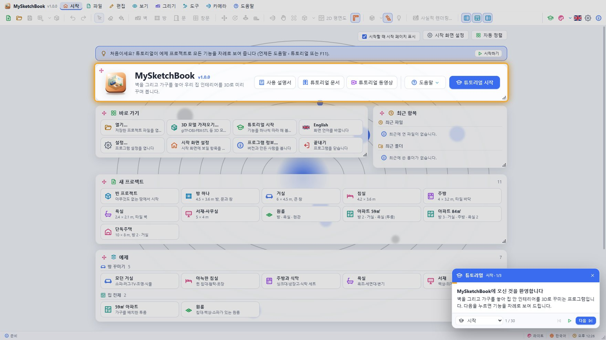
시작 화면은 움직이는 배경 위의 카드로 되어 있습니다.
| 카드 | 내용 |
|---|---|
| 맨 위(제목) | 사용 설명서 · 튜토리얼 문서 · 튜토리얼 동영상 버튼, 도움말 메뉴, 튜토리얼 시작 |
| 바로 가기 | 열기… · 3D 모델 가져오기… · 튜토리얼 시작 · 언어(English/한국어) · 설정… · 시작 화면 설정 · 프로그램 정보… · 끝내기 |
| 최근 항목 | 최근 파일과 최근 폴더. 클릭하면 열고(폴더는 그 폴더에서 열기 대화상자), ✕로 목록에서 지우고, 모두 지우기 |
| 새 프로젝트 | 템플릿 11가지 (아래 표) |
| 예제 | 가구까지 배치된 예제 프로젝트: 방 꾸미기(모던 거실 · 아늑한 침실 · 주방과 식탁 · 욕실 · 서재), 집 전체(59㎡ 아파트 · 원룸) |
| 움직이는 배경 | 배경 애니메이션 20가지, 움직이는 배경 바꾸기, 배경 이미지…, 움직임 속도, 카드 불투명도, 시작할 때 무작위, 자동 변경 |
- 카드는 왼쪽 위의 손잡이(✥)를 끌어 옮기고, 오른쪽 아래 모서리를 끌어 크기를 바꿉니다(모서리를 두 번 누르면 내용에 맞춤). 자동 정렬은 처음 배치로 되돌립니다.
- 위쪽의 시작할 때 시작 페이지 표시를 끄면 다음부터는 방 하나 템플릿 프로젝트로 바로 시작합니다.
- 시작 화면 설정에서 최근 파일·최근 폴더·예제·움직이는 배경 카드와 튜토리얼 안내 띠를 보일지 정합니다.
- 처음 켤 때는 시작 안내 창이 뜹니다: 튜토리얼 시작, 아파트 템플릿(59㎡)으로 시작, 나중에. 도움말 › 시작 안내 창으로 다시 열 수 있습니다.
1.3 템플릿과 예제
| 템플릿 | 내용 |
|---|---|
| 빈 프로젝트 | 아무것도 없는 땅에서 시작 |
| 방 하나 | 4.5 × 3.6 m 방, 문과 창 |
| 거실 | 6 × 4.5 m, 큰 창 |
| 침실 | 4.2 × 3.6 m |
| 주방 | 4 × 3.2 m, 타일 바닥 |
| 욕실 | 2.4 × 2.1 m, 타일 벽 |
| 서재·사무실 | 5 × 4 m |
| 원룸 | 방 · 욕실 · 현관 |
| 아파트 59㎡ | 방 2 · 거실 · 욕실 (투룸) |
| 아파트 84㎡ | 방 3 · 거실 · 주방 · 욕실 2 |
| 단독주택 | 10 × 8 m, 방 2 · 거실 |
템플릿에는 벽(외벽 25 cm, 칸막이 12 cm, 높이 2.4 m)·문·창·방이 이미 그려져 있어 바로 가구를 배치할 수 있습니다. 파일 › 템플릿에서 새로 만들기… 로도 고릅니다. 예제는 화면 언어에 맞는 방 이름으로 열립니다.
2. 화면 구성
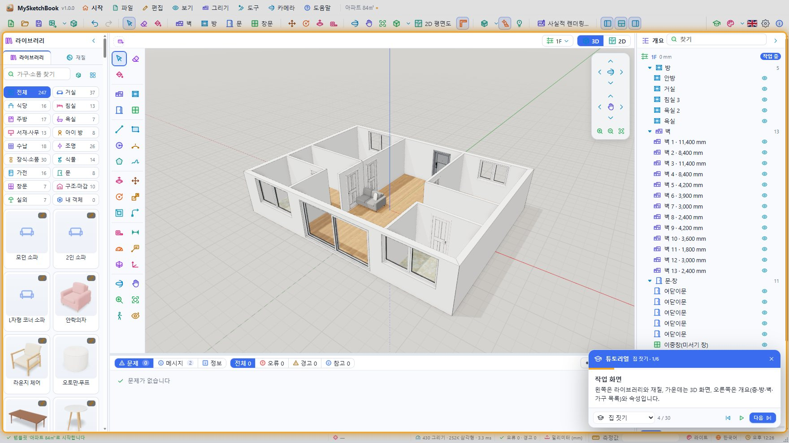
| 위치 | 이름 | 하는 일 |
|---|---|---|
| 맨 위 | 메뉴 막대 | 프로그램 이름·버전, 프로젝트 이름(바뀌면 ● 표시), 시작 · 파일 · 편집 · 보기 · 그리기 · 도구 · 카메라 · 도움말. 데스크톱에서는 제목 표시줄을 겸합니다(끌어서 창 이동, 두 번 클릭해 최대화, 오른쪽 끝에 최소화·최대화·닫기) |
| 그 아래 | 툴바 | 자주 쓰는 명령 (2.2) |
| 왼쪽 | 라이브러리 / 재질 패널 | 가구·소품 카드와 재질 견본 |
| 왼쪽 안쪽 | 도구 모음 | SketchUp의 큰 도구 세트처럼 묶은 도구 (2.3) |
| 가운데 위 | 장면 탭, 층 칩, 3D / 2D 전환 | 저장한 시점, 작업 층 고르기, 3D 보기와 2D 평면도 |
| 가운데 | 3D 화면 | 모델. 오른쪽 위의 화면 조작 패드(궤도·이동 화살표, 확대·축소, 전체 보기) |
| 가운데 아래 | 하단 패널 | 문제 · 메시지 · 정보 (2.6) |
| 오른쪽 | 개요 + 속성 · 스타일 · 그림자 · 태그 · 장면 · 층 탭 | 모델의 목록과 선택한 것의 속성 (2.5) |
| 맨 아래 | 상태 표시줄 | 도움말·알림, 선택 개수, 커서 위치, 성능, 문제 개수, 단위, 측정값 상자 (2.7) |
패널 사이의 경계선을 끌어 왼쪽·오른쪽 패널의 폭과 하단 패널의 높이를 바꿉니다. 개요와 아래 탭 사이의 경계도 끌 수 있습니다. 패널 머리글의 ‹ › 버튼(또는 Ctrl+Shift+1 / Ctrl+Shift+2, Ctrl+J)으로 접고 펼칩니다. 접힌 패널은 가장자리에 좁은 띠로 남아 클릭하면 다시 펼쳐집니다. 데스크톱에서는 오른쪽 아래 모서리의 그립을 끌어 창 크기를 바꿉니다.
2.1 메뉴
| 메뉴 | 항목 |
|---|---|
| 파일 | 새 프로젝트 · 템플릿에서 새로 만들기… · 열기… · 시작 페이지 · 최근 파일… · 최근 폴더 · 최근 파일·폴더 기록 모두 지우기 · 저장 · 다른 이름으로 저장… · 3D 모델 가져오기… · 내보내기 ▸ (그림으로 저장… · 사실적 렌더링… · 평면도 그림 (.png) · glTF 바이너리 (.glb) · glTF (.gltf) · Wavefront OBJ (.obj) · STL (.stl, 3D 프린팅) · PLY (.ply) · USDZ (.usdz, AR) · 선택한 것만 .glb로) · 프로젝트 닫기 · 끝내기 |
| 편집 | 실행 취소 · 다시 실행 · 잘라내기 · 복사 · 붙여넣기 · 복제 · 삭제 · 모두 선택 · 선택 해제 · 회전·대칭 ▸ (90° 회전 (시계 방향) · 90° 회전 (반시계 방향) · 좌우 대칭 · 바닥에 내려놓기) · 숨기기·잠금 ▸ (숨기기 · 모두 보이기 · 잠금 · 잠금 해제) · 그룹 만들기 · 분해 · 안내선 모두 지우기 |
| 보기 | 표준 보기 ▸ (등각 보기 · 위 · 앞 · 뒤 · 왼쪽 · 오른쪽 · 아래) · 원근 투영 · 2D 평면도 · 면 스타일 ▸ · 표시 ▸ (눈금자 · 격자 · 축 · 모서리 선 · 그림자 · 조명 켜기 · 성능 표시 (FPS·삼각형) · 라이브러리 패널 · 개요·속성 패널 · 하단 패널 · 상태 표시줄) · 표시 품질 ▸ (빠르게 · 균형 · 고품질) · 장면 ▸ (장면 추가 · 이전 장면 · 다음 장면) · 모양 ▸ (테마 무작위로 바꾸기 · 테마 고르기 · 언어 전환 · 움직이는 배경 바꾸기 · 배경 이미지… · 배경 끄기) |
| 그리기 | 벽 · 방 · 문 · 창문 · 층 추가 · 도형 그리기 ▸ (선 · 사각형 · 원 · 호 · 다각형 · 자유선) |
| 도구 | 선택 · 지우개 · 페인트 통 · 수정 ▸ (밀기/당기기 · 이동 · 회전 · 크기 조절 · 오프셋 · 경로 따라가기) · 솔리드 도구 ▸ (합치기 · 빼기 · 교집합 · 면 교차 · 모서리 부드럽게) · 측정·주석 ▸ (줄자 · 치수 · 각도기 · 글 표시 · 축 지정 · 안내선 모두 지우기) · 단면 ▸ (단면 · 단면 켜기/끄기 · 단면 모두 지우기) · 지금 검사 · 문제 보기 · 메시지 보기 · 사실적 렌더링… · 설정… |
| 카메라 | 궤도 · 이동(화면) · 확대/축소 · 전체 보기 · 선택한 것 보기 · 걷기 · 표준 보기 ▸ · 원근 투영 · 2D 평면도 · 장면 추가 · 이전 장면 · 다음 장면 |
| 도움말 | 시작 안내 창 · 튜토리얼 · 튜토리얼 문서 · 튜토리얼 동영상 · 사용 설명서 · 단축키 목록… · 설정… · 프로그램 정보… |
메뉴 항목 오른쪽에는 단축키가, 지금 쓸 수 없는 항목은 흐리게 표시됩니다. 데스크톱에서 메뉴는 별도의 작은 창으로 열립니다.
오른쪽 클릭 메뉴
- 모델 위의 물체: 잘라내기 · 복사 · 복제 · 삭제, 종류별 명령(가구: 90° 회전 · 좌우 대칭 · 바닥에 내려놓기 · 다른 항목으로 바꾸기 · 재질 되돌리기 / 벽: 벽 나누기 · 벽 방향 뒤집기 / 모델: 그룹 편집 · 분해 · 솔리드 도구 / 문·창: 다른 항목으로 바꾸기), 이동 · 회전 · 크기 조절, 숨기기 · 잠금 · 잠금 해제, 선택한 것 보기.
- 빈 곳: 붙여넣기 · 모두 선택 · 전체 보기 · 표준 보기 · 원근 투영 · 2D 평면도 · 면 스타일 · 표시 · 장면 추가 · 그림으로 저장… · 사실적 렌더링….
- 라이브러리 카드: 배치하기 · 선택한 가구를 이것으로 바꾸기. 재질 견본: 이 재질로 칠하기 · 선택한 벽·방에 적용.
- 개요의 행, 하단 패널의 문제·메시지, 상태 표시줄, 입력 칸(잘라내기·복사·붙여넣기·모두 선택)에도 각자의 메뉴가 있습니다.
2.2 툴바
왼쪽부터 다음 묶음이 있습니다. 버튼에 마우스를 올리면 이름·단축키·설명이 나옵니다.
| 묶음 | 버튼 |
|---|---|
| 파일 | 새 프로젝트 · 열기 · 저장 · 그림으로 저장(옆의 ▾ = 내보내기 메뉴) · 3D 모델 가져오기 |
| 편집 | 실행 취소 · 다시 실행 |
| 선택 | 선택 · 지우개 · 페인트 통 |
| 건축 | 벽 · 방 · 문 · 창문 |
| 수정 | 이동 · 회전 · 밀기/당기기 · 줄자 |
| 카메라 | 궤도 · 이동(화면) · 전체 보기 · 등각 보기(▾ = 보기 방향) · 2D 평면도 · 눈금자 |
| 표현 | 면 스타일 바꾸기(▾ = 면 스타일 고르기) · 그림자 · 조명 켜기 |
| 출력 | 사실적 렌더링… |
| 패널 | 라이브러리 패널 · 하단 패널 · 개요·속성 패널 |
| 오른쪽 | 튜토리얼 · 테마 무작위로 바꾸기(▾ = 테마 고르기) · 언어 전환(국기) · 설정 · 프로그램 정보 |
창이 좁아져도 툴바가 잘리지 않도록 창의 최소 폭이 툴바에 맞춰 정해집니다.
2.3 도구 모음
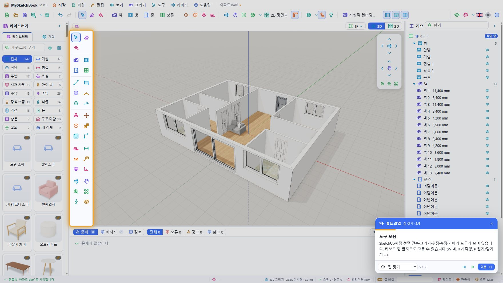
3D 화면 왼쪽의 도구 모음은 여섯 묶음입니다. 키보드 한 글자로도 고를 수 있습니다(괄호 안).
| 묶음 | 도구 |
|---|---|
| 선택 | 선택 (Space) · 지우개 (E) · 페인트 통 (B) |
| 건축 | 벽 (W) · 방 (Shift+R) · 문 · 창문 |
| 그리기 | 선 (L) · 사각형 (R) · 원 (C) · 호 (A) · 다각형 (Shift+P) · 자유선 |
| 수정 | 밀기/당기기 (P) · 이동 (M) · 회전 (Q) · 크기 조절 (S) · 오프셋 (F) · 경로 따라가기 |
| 측정·주석 | 줄자 (T) · 치수 (D) · 각도기 · 글 표시 · 단면 · 축 지정 |
| 카메라 | 궤도 (O) · 이동(화면) (H) · 확대/축소 (Z) · 전체 보기 (Shift+Z) · 걷기 · 둘러보기 |
도구를 고르면 상태 표시줄 왼쪽에 사용법이 나옵니다. Esc는 진행 중인 동작을 취소하고, 한 번 더 누르면 선택 도구로 돌아갑니다.
축 지정 도구는 아직 준비 중입니다. 고르면 "이 도구는 아직 준비 중입니다"라고 알리고 선택 도구로 돌아갑니다.
2.4 왼쪽 패널: 라이브러리와 재질
- 라이브러리 탭 — 검색 칸(한국어·영어 이름과 태그), 3D 모델 가져오기 버튼, 카드 크기(작게·보통·크게) 버튼, 분류 칩(전체 · 거실 · 식당 · 침실 · 주방 · 욕실 · 서재·사무 · 아이 방 · 수납 · 조명 · 장식·소품 · 식물 · 가전 · 문 · 창문 · 구조·마감 · 실외 · 내 객체, 칩마다 개수), 카드 목록. 카드의 HQ 표시는 실측 사진 모델(Poly Haven), 자 모양 표시는 크기·재질을 바꿀 수 있는 매개변수 모델입니다. 자세한 사용법은 5장.
- 재질 탭 — 지금 칠할 재질(붓), 페인트 통 버튼, 검색 칸, +(새 재질), 분류 칩(나무 · 바닥재 · 패브릭 · 가죽 · 석재 · 타일 · 벽 마감 · 금속 · 유리 · 도장 · 플라스틱 · 도자기 · 카펫·러그 · 식물 · 기타), 견본 목록. 6장.
2.5 오른쪽 패널: 개요와 편집 탭
개요는 층마다 방 · 벽 · 문·창 · 가구·소품 · 모델을 묶어 보여 줍니다.
- 행을 클릭하면 선택,
Ctrl+클릭은 추가,Shift+클릭은 선택 전환, 두 번 클릭하면 그것을 화면에 맞춰 보여 줍니다. - 행 끝의 눈 아이콘으로 숨기고 보이기, 잠근 것에는 자물쇠가 붙습니다.
- 묶음 머리를 클릭해 접고 펼치고, 층 머리를 클릭하면 그 층이 작업 중인 층이 됩니다.
- 위쪽 찾기 칸은 이름으로 거릅니다.
아래 탭:
| 탭 | 내용 |
|---|---|
| 속성 | 선택한 것의 크기·재질·위치 (아무것도 선택하지 않으면 프로젝트 이름·단위·방 면적 합계·구성). 종류별 항목은 4–5장 |
| 스타일 | 면 스타일, 모서리 선, 조명 켜기, 배경, 환경 조명, 노출, 표시 품질 (9장) |
| 그림자 | 그림자 표시, 시각, 날짜, 위도, 경도, 북쪽 각도, 도시 (9장) |
| 태그 | 태그 목록, 보이기/숨기기, 이름, 개수, 추가·삭제 (10장) |
| 장면 | 장면 목록, 이동·이름·현재 보기로 갱신·삭제, 추가 (10장) |
| 층 | 층 목록, 작업 층, 이름·바닥 높이·층 높이, 보이기, 삭제, 추가 (10장) |
2.6 하단 패널
Ctrl+J로 열고 닫습니다. 세 탭이 있습니다.
- 문제 — 모델 검사 결과(15장). 전체 · 오류 · 경고 · 참고로 거르고, 지금 검사로 다시 검사합니다. 행을 클릭하면 대상을 선택하고 화면에 맞춰 보여 줍니다.
- 메시지 — 상태 표시줄에 잠깐 나왔던 알림과 오류가 시각과 함께 남습니다. 메시지 복사, 메시지 지우기.
- 정보 — 작업 층(이름·바닥 높이·층 높이), 면적(㎡와 평, 방마다), 구성(벽·방·가구·문·창·모델·장면 수), 화면(그리기 호출·삼각형·프레임 시간·FPS), 가져온 모델(개수·삼각형).
2.7 상태 표시줄과 측정값 상자
왼쪽부터: 지금 도구의 사용법 또는 알림 · 선택 개수 · 커서 위치(X, Y, 높이) · 성능(FPS · 그리기 호출 · 삼각형 · 프레임 시간, 보기 › 표시 › 성능 표시가 켜져 있을 때) · 문제 개수(오류 · 경고, 클릭하면 문제 탭) · 단위 · 측정값 상자 · 테마 · 언어 · 시계.
측정값 상자는 SketchUp의 VCB입니다. 도구가 동작하는 중에 그냥 숫자를 치면 상자로 들어가고, Enter로 적용됩니다(Esc는 지우기). 상자의 이름은 도구에 따라 길이 · 거리 · 각도 · 배율 · 반지름 · 치수 · 간격으로 바뀝니다.
| 입력 | 뜻 |
|---|---|
2400 | 프로젝트 단위로 2400 (mm 프로젝트면 2.4 m) |
2.4m · 240cm · 2400mm | 단위를 붙이면 그 단위 |
8' · 8'6 · 96in · 96" | 피트·인치 |
1200,800 (또는 1200x800) | 사각형의 가로, 세로 |
45 | 회전·각도기의 각도(°) |
1.5 | 크기 조절 배율 |
6s | 다각형의 변 수, 원의 분할 수 |
x5 · *5 · /5 | 이동 복사 직후: 같은 간격으로 5개 더 / 처음과 끝 사이를 5등분 |
3. 카메라와 보기
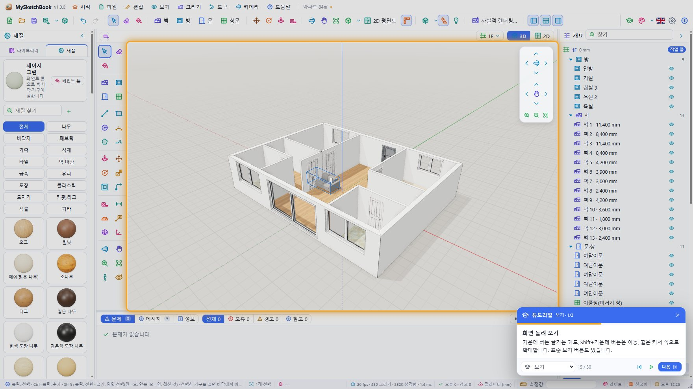
| 동작 | 마우스 | 도구·키 |
|---|---|---|
| 궤도(돌려 보기) | 가운데 버튼 끌기, 오른쪽 버튼 끌기, 선택 도구로 왼쪽 버튼 끌기(기본 설정) | 궤도 O + 왼쪽 버튼 끌기 |
| 화면 이동 | Shift + 가운데(또는 오른쪽) 버튼 끌기, 선택 도구로 Alt + 왼쪽 버튼 끌기 | 이동(화면) H |
| 확대/축소 | 휠 (커서가 있는 곳을 향해) | 확대/축소 Z + 위아래로 끌기 |
| 전체 보기 | — | Shift+Z, 화면 조작 패드의 전체 보기 |
| 그 점을 가운데로 | 가운데 버튼 두 번 클릭 | — |
| 선택한 것 보기 | 개요에서 두 번 클릭 | 카메라 › 선택한 것 보기 |
- 궤도는 커서 아래의 점을 중심으로 돕니다. 오른쪽 버튼은 4 픽셀 넘게 끌어야 궤도가 되고, 그냥 클릭하면 오른쪽 클릭 메뉴가 열립니다(마우스 휠 버튼이 없는 노트북용).
- 3D 화면 오른쪽 위의 화면 조작 패드: 위 원은 궤도(위·아래·왼쪽·오른쪽으로 돌기), 아래 원은 화면 이동, 그 아래 확대 · 축소 · 전체 보기. 누르고 있으면 계속 움직입니다.
- 표준 보기 — 등각 보기 · 위 · 앞 · 뒤 · 왼쪽 · 오른쪽 · 아래 (툴바의 등각 보기 버튼과 ▾). 앞은 +Z 쪽에서 본 모습입니다.
- 원근 투영 — 끄면 평행 투영(정사영)이 됩니다. 보이는 크기는 유지됩니다.
- 2D 평면도 (
F4, 화면 위의 3D / 2D 전환) — 작업 층을 위에서 내려다보는 평행 투영이며, 바닥에서 1.2 m 높이에서 잘라 벽 단면을 진하게 칠합니다. 이 상태에서도 벽을 그리고 가구를 배치할 수 있습니다. 2D에서는 궤도 대신 화면 이동이 되고, 눈금자(Ctrl+Shift+R)가 위쪽과 왼쪽에 나와 커서 위치를 표시합니다. - 걷기 — 눈높이 1.6 m의 1인칭 시점.
WASD또는↑↓로 걷고←→로 돌며,Shift로 빨리,Q/E로 내려가고 올라가며, 왼쪽 버튼 끌기로 둘러봅니다. 벽과 가구에 부딪히면 멈춥니다. - 둘러보기 — 제자리에서 끌어 고개를 돌립니다.
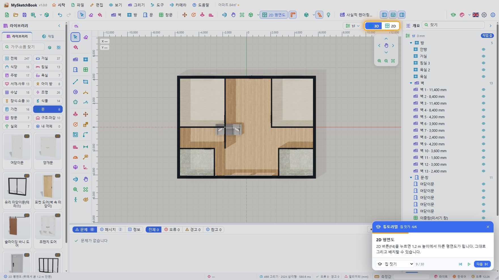
4. 집 짓기: 벽 · 방 · 문 · 창
4.1 벽
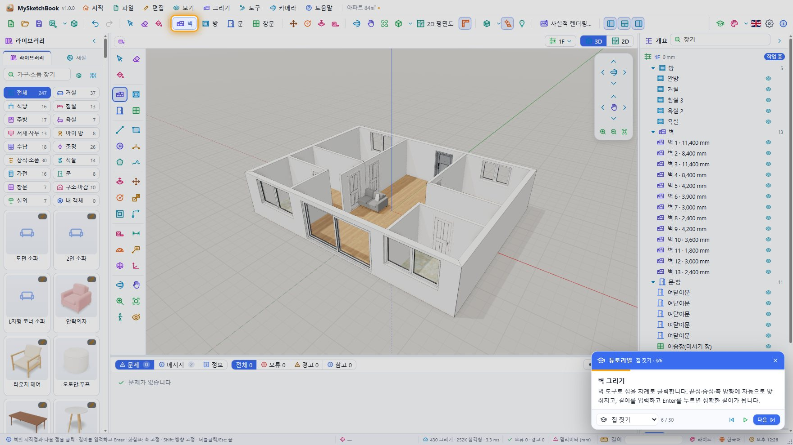
벽 도구(W)로 바닥 위의 점을 차례로 클릭하면 벽이 이어서 그려집니다.
- 시작점을 클릭합니다.
- 다음 점을 클릭할 때마다 벽 하나가 생기고, 마지막 점에서 계속 이어집니다. 그리는 동안 벽 두께의 윤곽과 길이가 보입니다.
- 정확한 길이: 방향을 마우스로 잡은 채 길이를 치고
Enter(예:3600,3.6m). - 첫 점을 다시 클릭하면 닫히며 끝납니다. 두 번 클릭,
Enter,Esc로도 끝냅니다.
- 추론: 다른 벽의 끝점 · 중점 · 벽 위, 빨간 축(X)·초록 축(Z) 방향, 다른 점과의 정렬에 자동으로 맞추고, 무엇에 맞췄는지 커서 옆에 표시합니다. 격자에 맞춤(설정 › 3D 보기)을 켜면 격자 간격에도 맞춥니다.
- 화살표 키:
→/←는 빨간 축,↑/↓는 초록 축으로 방향을 고정(다시 누르면 풀림).Shift를 누르고 있으면 지금 방향으로 고정됩니다. - 새 벽의 두께는 설정 › 3D 보기 › 기본 벽 두께(기본 150 mm)이고, 높이는 작업 층의 층 높이를 따릅니다.
- 벽이 만나는 곳은 자동으로 이어집니다: 끝과 끝이 만나면 비스듬히(마이터), 한 벽의 끝이 다른 벽의 옆면에 닿으면 맞대어 붙습니다(1 cm 안이면 만난 것으로 봅니다).
벽 속성 (벽을 클릭하고 속성 탭): 이름 · 길이 · 두께 · 높이 · 왼쪽 면 · 오른쪽 면(재질) · 태그 · 숨김 · 잠금. 길이를 바꾸면 끝점이 움직이고 그 끝에 이어진 벽도 함께 따라옵니다. 머리글의 버튼과 오른쪽 클릭 메뉴:
- 벽 나누기 — 벽을 가운데에서 둘로 나눕니다. 문·창은 있던 쪽 벽에 남습니다.
- 벽 방향 뒤집기 — 시작점과 끝점을 바꿉니다. 왼쪽/오른쪽 면 재질도 서로 바뀌고 문·창은 제자리에 있습니다.
벽을 옮기면(이동 도구, 화살표 키) 그 끝에 붙어 있던 다른 벽의 끝도 따라와 모서리가 떨어지지 않습니다.
4.2 방
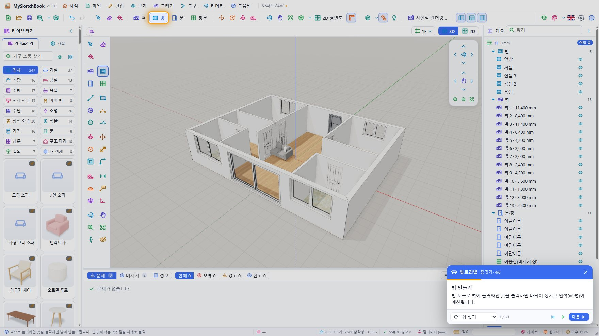
방 도구(Shift+R):
- 벽으로 둘러싸인 곳을 클릭 — 커서를 올리면 만들어질 바닥이 초록으로 미리 보이고 면적이 표시됩니다. 클릭하면 방이 생깁니다.
- 빈 곳에서는 꼭짓점을 차례로 클릭해 윤곽을 그립니다. 첫 점을 다시 클릭하거나 두 번 클릭 또는
Enter로 닫습니다.Esc는 취소.
새 방은 "방 1, 방 2 …"라는 이름에 오크 바닥, 흰색 페인트 천장(천장은 숨김)으로 만들어집니다. 같은 윤곽의 방이 이미 있으면 다시 만들지 않습니다.
방 속성: 이름 · 면적(㎡와 평) · 바닥재 · 천장 표시 · 천장(재질) · 숨김 · 잠금. 방을 옮기면 바닥 윤곽이 함께 움직입니다.
4.3 문과 창
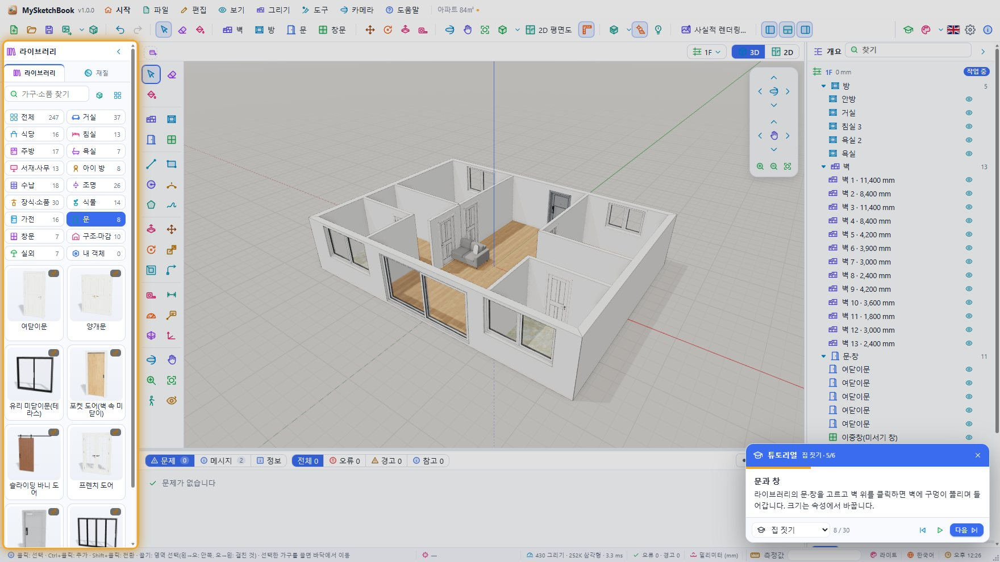
툴바·도구 모음의 문 또는 창문을 누르면 라이브러리가 문(또는 창문) 분류로 바뀌고 첫 항목의 배치가 시작됩니다. 다른 문·창은 카드를 고릅니다.
- 문 8가지: 여닫이 문 · 양개 문 · 미닫이 유리문 · 포켓 도어 · 바니 도어 · 프렌치 도어 · 현관문(철제) · 접이식 문.
- 창 7가지: 여닫이 창 · 오르내리 창 · 미서기 창 · 고정 창 · 들창 · 베이 윈도 · 지붕 창.
벽 위를 클릭하면 벽에 구멍이 뚫리며 문·창이 들어갑니다. 커서를 따라 벽을 미끄러지며 벽 시작점에서의 거리가 표시되고, 벽보다 넓으면 놓이지 않습니다("문·창은 벽 위에 놓아야 합니다"). 클릭한 면이 여는 쪽이 됩니다. 창은 바닥에서 기본 높이(대개 0.9 m)에 놓입니다.
문·창 속성: 폭 · 높이 · 바닥에서 높이 · 벽 시작점에서(벽 시작점부터 중심까지의 거리) · 경첩 방향 바꾸기 · 여는 쪽(왼쪽 면/오른쪽 면) · 그 밖의 치수와 옵션(문짝 수, 손잡이, 재질 등 항목마다 다름) · 다른 항목으로 바꾸기. 이동 도구나 화살표 키로 옮기면 벽을 따라서만 움직입니다.
4.4 2D 평면도에서 그리기
F4로 2D 평면도를 켜면 위에서 본 도면 위에서 벽·방·문·창·가구를 그대로 다룰 수 있습니다. 치수 도구로 벽 길이를 표시하고, 파일 › 내보내기 › 평면도 그림 (.png) 으로 도면을 그림으로 저장합니다(12장).
5. 가구 배치
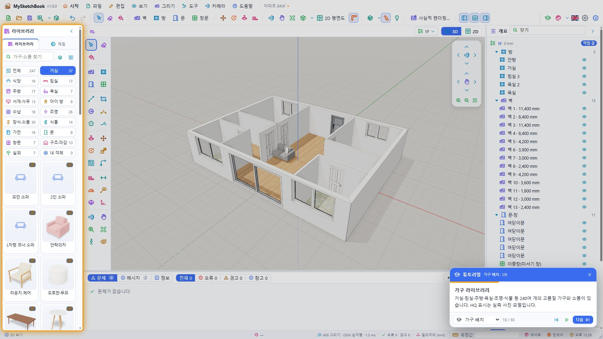
5.1 라이브러리
라이브러리에는 247개 항목이 있습니다.
- 매개변수 모델 125개 — 폭·깊이·높이·좌석 수 같은 치수와 천·나무·다리 모양 같은 옵션을 바꿀 수 있습니다. 16개 분류(거실 · 식당 · 침실 · 주방 · 욕실 · 서재·사무 · 아이 방 · 수납 · 조명 · 장식·소품 · 식물 · 가전 · 문 · 창문 · 구조·마감 · 실외)에 고루 있습니다.
- 고품질 모델 122개(HQ) — Poly Haven의 실측 사진 모델(CC0)입니다. 크기는 원래대로이고 배율로만 바꿉니다.
- 내 객체 — 직접 가져온 3D 모델(11장).
카드에 마우스를 올리면 이름과 기본 크기가 나옵니다. 검색 칸은 한국어·영어 이름과 태그로 찾습니다.
5.2 배치하기
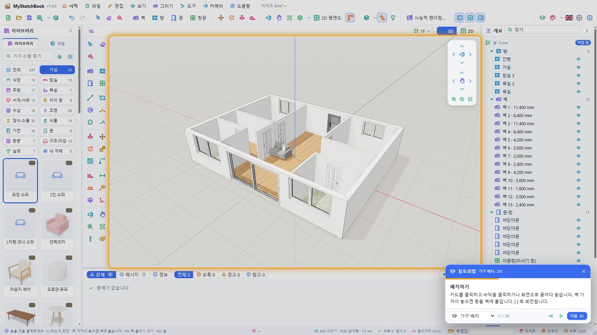
- 카드를 클릭하고 3D 화면에서 놓을 곳을 클릭합니다. 반투명한 미리보기가 커서를 따라오며, 배치 도구는
Esc나 다른 도구를 고를 때까지 계속 같은 항목을 놓습니다. - 카드를 화면으로 끌어다 놓기도 됩니다(한 번만 놓음).
- 벽 가까이 놓으면 등을 벽에 대고 벽에 붙습니다.
Alt를 누르면 벽 붙이기가 꺼지고 켜집니다. [](또는,.,R)로 놓기 전에 90°씩,Shift와 함께 15°씩 돌립니다.- 놓이는 곳은 항목마다 다릅니다: 바닥 가구는 바닥에, 그림·거울·벽등은 벽면에(정해진 높이), 천장 조명은 천장에, 작은 소품(화병·책 등)은 탁자나 선반의 윗면에.
- 놓은 것은 바로 선택되어 속성 탭에 나옵니다.
5.3 선택과 옮기기
- 선택(
Space): 클릭으로 선택,Ctrl+클릭 추가,Shift+클릭 전환, 빈 곳 클릭은 해제. 영역 선택: 왼쪽→오른쪽으로 끌면 영역 안에 완전히 들어간 것만, 오른쪽→왼쪽은 걸친 것까지. 기본 설정에서는 왼쪽 버튼 끌기가 화면 회전이므로Shift또는Ctrl을 누른 채 끌어 영역을 선택합니다. 설정 › 3D 보기 › 왼쪽 버튼 끌기를 선택 상자 (SketchUp)로 바꾸면 그냥 끌어도 영역 선택입니다. - 선택한 가구를 끌면 바닥 위에서 바로 옮겨집니다.
- 화살표 키는 선택한 것을 10 cm씩,
Shift와 함께 1 cm씩 옮깁니다. - 정확한 이동·회전은 이동·회전 도구(7.5)나 속성의 숫자를 씁니다.
- 복제(
Ctrl+D)는 30 cm 옆에, 붙여넣기(Ctrl+V)는 작업 층의 50 cm 옆에 사본을 만듭니다. 벽을 복사하면 그 벽의 문·창도 같이 복사됩니다. - 삭제(
Delete), 숨기기, 잠금(잠근 것은 옮기거나 지울 수 없음), 모두 보이기.
5.4 가구 속성과 옵션
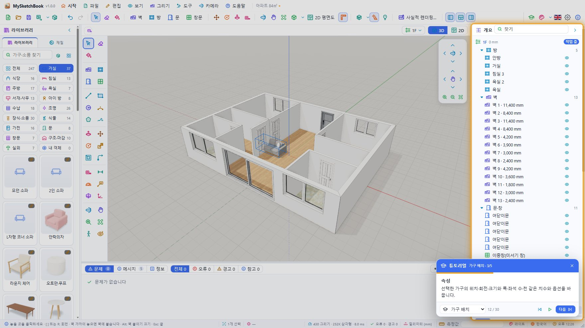
가구를 선택하면 속성 탭에 세 부분이 나옵니다.
- 가구 이름 머리글 — 이름 · 항목 · 크기(실제 너비×높이×깊이) · X · 높이(바닥 위) · Z · 회전(°) · 배율(×) · 태그 · 숨김 · 잠금. 머리글 버튼: 90° 회전 · 좌우 대칭 · 다른 항목으로 바꾸기.
- 치수와 옵션 — 매개변수 모델만. 예: 모던 소파 = 폭 · 좌석 수 · 깊이 · 높이 · 천 · 다리 · 팔걸이 · 쿠션 · 쿠션 수 · 쿠션 천. 길이는 프로젝트 단위로 입력하고, 개수는 −/+ 버튼, 재질은 재질 목록, 선택지는 펼침 목록, 켜고 끄는 것은 확인란입니다. 값은 항목이 허용하는 범위로 맞춰집니다.
- 재질 — 그 가구가 쓰는 재질(최대 12가지)이 부분마다 나오며, 각각을 다른 재질로 바꿀 수 있습니다. 재질 되돌리기로 원래대로.
그 밖의 명령:
- 다른 항목으로 바꾸기 — 같은 분류의 다른 항목(최대 30개) 메뉴에서 고르면 자리와 방향을 유지한 채 바뀝니다. 라이브러리 카드의 오른쪽 클릭 › 선택한 가구를 이것으로 바꾸기로 아무 항목으로나 바꿀 수 있습니다.
- 좌우 대칭 — 가구를 거울에 비친 모양으로 뒤집습니다.
- 바닥에 내려놓기 — 높이를 0으로.
- 90° 회전 —
Ctrl+](시계 방향),Ctrl+[(반시계 방향). 선택한 것들의 가운데를 중심으로 돕니다.
6. 재질과 페인트 통
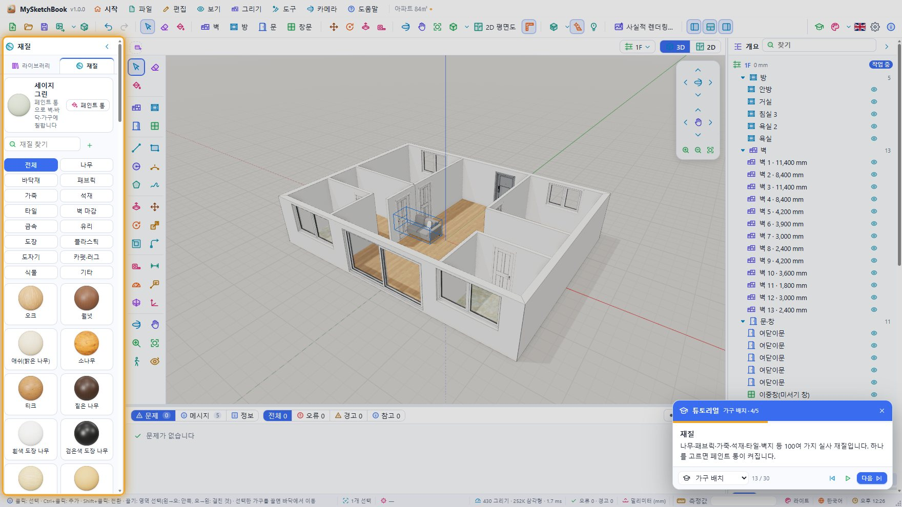
재질 탭에는 105가지 재질이 15개 분류로 있습니다. 나무·바닥재·타일·석재·벽 마감·패브릭·가죽 등 48가지는 Poly Haven의 사진 텍스처(색·요철·거칠기·음영)를 써서 실제 크기로 반복되고, 나머지는 색과 광택으로 표현합니다.
- 견본을 클릭하면 그 재질이 붓이 되고 페인트 통 도구가 켜집니다.
- 페인트 통(
B)으로 칠할 곳을 클릭합니다.- 벽: 클릭한 면(왼쪽 면·오른쪽 면·윗면)만 칠해집니다.
- 방: 바닥 또는 (천장을 표시했다면) 천장.
- 가구·문·창: 클릭한 부분의 재질만 바뀝니다(예: 소파의 천만, 다리만).
- 모델링한 면: 보이는 쪽(앞면 또는 뒷면)이 칠해집니다.
Alt+클릭은 스포이트 — 클릭한 곳의 재질을 붓으로 가져옵니다.- +(새 재질): 이름 · 색 · 거칠기 · 금속성으로 내 재질을 만듭니다. 프로젝트 파일에 저장되고 기타 분류에 나옵니다.
- 견본 오른쪽 클릭 › 선택한 벽·방에 적용: 선택한 벽의 양쪽 면, 선택한 방의 바닥을 한 번에 칠합니다.
- 속성 탭의 재질 칸(벽의 왼쪽/오른쪽 면, 방의 바닥재/천장, 가구의 재질)을 누르면 알맞은 분류의 재질 목록이 열립니다.
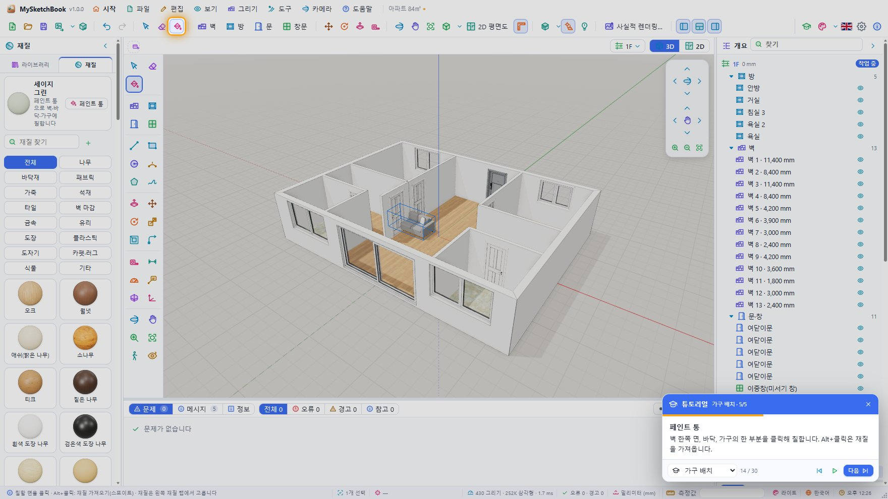
7. SketchUp식 모델링
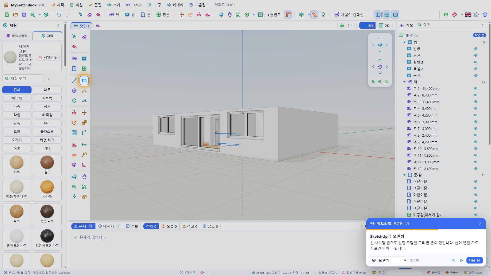
7.1 붙는 형상과 그룹
그리기 도구로 그린 선과 면은 SketchUp처럼 서로 붙습니다. 닫힌 선은 면이 되고, 면을 가로지르는 선은 면을 둘로 나누며, 면 안에 그린 닫힌 도형은 안쪽 면과 구멍이 됩니다. 점은 1/100 mm 안이면 하나로 합쳐집니다.
- 그룹 밖에서 그린 것은 층마다 하나인 모델(개요의 "모델" 묶음)에 들어가 서로 붙습니다.
- 그룹 만들기(
G): 선택한 모델을 그룹으로 바꿉니다. 그 뒤에 그리는 것은 새 모델로 들어가 그룹에 붙지 않습니다. - 그룹을 두 번 클릭(또는 그룹 편집)하면 그 그룹을 편집합니다. 그리는 것이 모두 그룹 안으로 들어가며,
Esc로 끝냅니다. - 분해: 그룹의 형상을 층의 모델로 되돌려 다시 붙게 합니다.
- 모델의 속성: 이름 · 컴포넌트 · 높이(바닥 위) · 태그 · 숨김 · 잠금 · 형상(면·모서리 수, 닫힌 솔리드면 부피 m³).
7.2 추론과 축 고정
그리기 도구는 커서 근처의 끝점 · 중점 · 중심 · 교차점 · 모서리 위 · 면 위 · 빨간/초록/파란 축 방향 · 평행 · 수직에 맞추고, 커서 옆에 이름(예: "끝점", "빨간 축 방향")과 점선을 보여 줍니다. 벽의 아래·위 모서리와 안내선에도 맞춥니다.
→빨간 축(X),←초록 축(Z),↑/↓파란 축(위)으로 방향을 고정합니다(다시 누르면 풀림).Shift를 누르고 있으면 지금 추론한 방향으로 고정됩니다.- 도형은 처음 클릭한 면의 평면(바닥·벽·모델의 면) 위에 그려지고, 빈 곳이면 바닥에 그려집니다.
7.3 그리기 도구
| 도구 | 사용법 | 측정값 상자 |
|---|---|---|
선 L | 점을 차례로 클릭. 닫히면 면이 생기고 새로 시작. 두 번 클릭이나 Esc로 끝 | 길이: 지금 방향으로 그 길이만큼 |
사각형 R | 두 모서리를 클릭 (첫 클릭의 평면에서, 변은 축 방향) | 1200,800 = 가로, 세로 |
원 C | 중심, 반지름을 클릭 (기본 24분할) | 반지름 · 48s = 분할 수 |
호 A | 시작점, 끝점, 볼록한 정도를 차례로 클릭 (12분할) | — |
다각형 Shift+P | 중심, 반지름을 클릭 (기본 6각형) | 반지름 · 8s = 변 수 |
| 자유선 | 누른 채 끌어서 그립니다. 끝이 처음 점에 가까우면 닫힙니다 | — |
7.4 밀기/당기기 · 오프셋 · 경로 따라가기
- 밀기/당기기
P— 면 위에 커서를 올리면 파랗게 표시됩니다. 면을 클릭하고 움직인 뒤 다시 클릭(또는 누른 채 끌었다 놓기)합니다. 높이를 치고Enter도 됩니다. 커서가 다른 형상의 끝점·중점·모서리에 닿으면 그 높이에 맞춥니다.- 옆면이 모두 직각인 상자의 면은 늘어나고(면 수 그대로), 그 밖에는 새 옆면이 생깁니다.
- 벽면이나 윗면에 그린 사각형을 밀어 넣으면 홈이, 당기면 돌출부가 됩니다. 반대쪽 면까지 밀면 구멍이 뚫립니다.
- 클릭할 때
Ctrl을 누르면 원래 면을 남기고 새로 뽑아냅니다. - 다른 면을 두 번 클릭하면 직전 거리를 반복합니다.
- 오프셋
F— 면을 클릭하고, 면의 가운데 쪽으로 움직이면 안쪽, 바깥쪽이면 바깥쪽으로 테두리를 복사합니다. 거리를 치면 양수는 안쪽, 음수는 바깥쪽입니다. 원은 원으로 유지됩니다. 너무 크면 "간격이 너무 커서 오프셋할 수 없습니다". - 경로 따라가기 — 단면이 될 면을 클릭한 뒤, 같은 모델 안에 그려 둔 경로(면에 속하지 않은 선·호가 이어진 것)의 모서리 하나를 클릭합니다. 단면이 경로를 따라 쓸려 몰딩·난간·파이프가 만들어집니다. 경로가 갈라지거나 끊겨 있으면 "경로가 이어진 한 줄이 아닙니다".
7.5 이동 · 회전 · 크기 조절
이 도구들은 가구·문·창·벽·방·모델·치수·글에 모두 씁니다. 선택한 것이 없으면 클릭한 것을 선택해 다룹니다.
- 이동
M— 기준점을 클릭하고 옮길 곳을 클릭합니다(또는 끌었다 놓기). 움직임은 기준점 높이의 수평면 위이며, 벽 끝점·축 방향에 맞춥니다.→/←빨간 축,↑/↓초록 축 고정. 거리를 치면 그 거리만큼 옮기고, 끝난 직후에 쳐도 직전 이동 거리를 고칩니다.- 처음 클릭할 때
Ctrl을 누르고 있으면 복사하며 옮깁니다. 복사 직후x5를 치면 같은 간격으로 사본이 5개가 되도록 더 만들고,/5는 처음과 끝 사이를 5등분해 놓습니다(배열 복사). Esc는 이동을 취소합니다.
- 처음 클릭할 때
- 회전
Q— 회전 중심, 시작 방향, 끝 방향을 차례로 클릭합니다. 각도기 눈금처럼 15°마다 맞춥니다. 각도를 치고Enter도 됩니다. 회전 중이 아닐 때 각도를 치면 선택한 것을 자기 가운데를 중심으로 그 각도만큼 돌립니다. 회전은 수직 축(위에서 보아) 기준입니다. - 크기 조절
S— 가구와 모델에 씁니다. 클릭하고 끌면 바닥 가운데를 기준으로 고르게 커지고 작아지며 0.1 단위에 맞춥니다. 배율을 치고Enter(예:1.5).Esc는 취소.
7.6 솔리드 도구와 그 밖의 편집
도구 › 솔리드 도구 (모델을 선택한 뒤):
| 명령 | 조건 | 결과 |
|---|---|---|
| 합치기 | 모델 2개 이상 | 하나의 솔리드로 합침 |
| 빼기 | 모델 정확히 2개 | 먼저 선택한 모델에서 나중 모델을 뺌 |
| 교집합 | 모델 정확히 2개 | 겹친 부분만 남김 |
| 면 교차 | 모델 선택 | 선택한 모델 안에서 서로 지나가는 면에 교선을 넣어 면을 나눔 |
| 모서리 부드럽게 | 모델 선택 | 20°보다 완만하게 만나는 모서리를 부드럽게(선을 감추고 매끈하게 음영) |
솔리드 도구는 구멍 없이 닫힌 모델에만 씁니다. 아니면 "닫힌 솔리드가 아닙니다". 결과는 첫 모델에 담기고 나머지 모델은 사라집니다.
지우개 E — 클릭하거나 끌어서 지웁니다. 가구·벽·방 등은 통째로, 모델은 커서 아래의 모서리(원·호는 곡선 전체) 또는 면만 지웁니다. 같은 평면의 두 면을 나누던 선을 지우면 면이 다시 하나로 합쳐집니다. 잠근 것은 지우지 않습니다.
8. 측정과 주석
| 도구 | 사용법 |
|---|---|
줄자 T | 두 점을 클릭하면 거리가 알림으로 나오고 안내선(점선)이 남습니다. 안내선은 다른 도구가 맞추는 기준이 됩니다 |
치수 D | 시작점, 끝점, 치수선 위치를 차례로 클릭. 길이는 프로젝트 단위로 표시되고 단위를 바꾸면 따라 바뀝니다 |
| 각도기 | 꼭짓점, 첫 방향, 둘째 방향을 클릭하면 각도가 알림으로 나오고 둘째 방향으로 3 m 안내선이 남습니다 |
| 글 표시 | 글을 붙일 곳을 클릭하고 내용을 입력합니다. 방을 클릭하면 이름과 면적, 벽은 길이, 가구는 이름이 미리 채워집니다 |
| 단면 | 자를 면을 클릭하면 그 면 앞쪽을 잘라 낸 단면 보기가 됩니다(새 단면이 켜지면 이전 단면은 꺼짐) |
- 안내선 모두 지우기 — 편집 또는 도구 › 측정·주석 메뉴.
- 단면 켜기/끄기, 단면 모두 지우기 — 도구 › 단면 메뉴.
- 치수·글·안내선도 선택해 이동하고 지울 수 있습니다. 글은 속성 탭에서 내용을 고칩니다.
9. 스타일 · 그림자 · 환경 · 조명 · 표시 품질
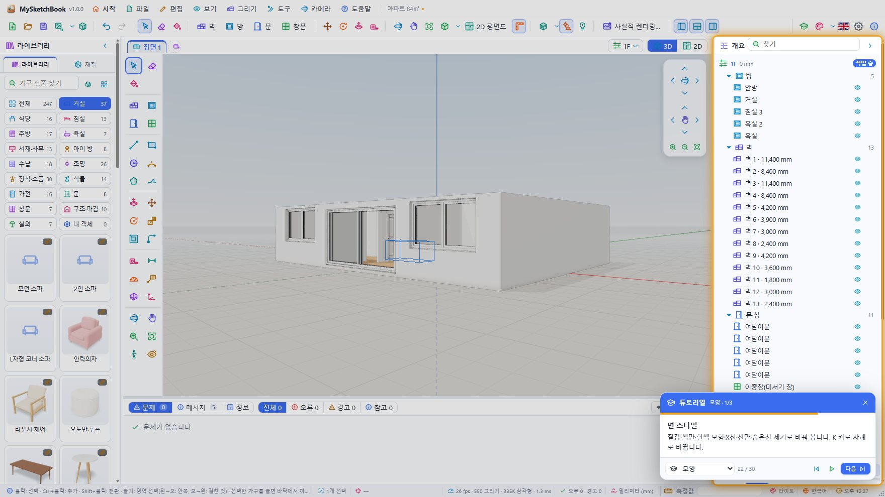
9.1 스타일 탭
- 면 스타일 — 질감(재질과 텍스처) · 색만(텍스처 없이 색) · 흰색 모형 · X선(반투명) · 선만 · 숨은선 제거. 툴바의 면 스타일 버튼이나
K로 차례로 바뀌고, ▾로 고릅니다. - 모서리 선 — 물체의 윤곽선 표시.
- 조명 켜기 (램프가 빛을 냄) — 천장등·스탠드 등 조명 가구가 실제 광원이 됩니다(툴바의 전구 버튼).
- 배경 — 하늘과 땅 · 흰색 · 어두운 색 · 환경 사진(HDRI).
- 환경 조명 — 기본 실내 조명, 또는 HDRI 8가지(밝은 거실 (흐린 낮) · 호텔 객실 · 바다 전망 스위트룸 · 촬영 스튜디오 · 맑은 낮 하늘 · 흐린 하늘 · 해 질 녘 · 밤). 반사와 주변광이 그 사진의 빛으로 바뀌며, 배경을 "환경 사진(HDRI)"으로 하면 사진이 배경으로 보입니다. 사실적 렌더링도 같은 HDRI로 비춥니다.
- 노출 — 0.3 ~ 2.5. 끄는 동안 바로 보입니다.
- 표시 품질 묶음 — 표시 품질 · 구석 음영 (AO) · 계단 현상 제거 · 그림자 해상도 (9.4).
스타일은 장면마다 저장됩니다(10.1).
9.2 그림자 탭
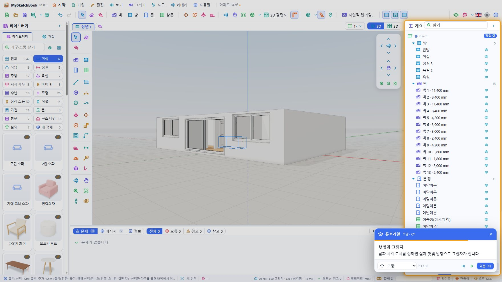
- 그림자 표시 — 툴바의 그림자 버튼과 같습니다.
- 시각(05:00 ~ 21:00)과 날짜 막대 — 끌면 해의 위치와 그림자가 바로 바뀝니다.
- 위도 · 경도 — 집의 위치. 도시 목록(서울 · 부산 · 제주 · 도쿄 · 뉴욕 · 런던 · 파리 · 시드니 · 싱가포르)에서 고르면 위도·경도·시간대가 들어갑니다.
- 북쪽 각도 — 평면도의 위쪽(−Z)과 실제 북쪽 사이의 각도.
9.3 보기 › 표시
눈금자 · 격자 · 축(빨강 X, 초록 Z, 파랑 위) · 모서리 선 · 그림자 · 조명 켜기 · 성능 표시 · 각 패널과 상태 표시줄을 켜고 끕니다.
9.4 표시 품질과 성능
보기 › 표시 품질 또는 스타일 탭에서 고릅니다.
| 품질 | 구석 음영 | 그림자 맵 | 계단 현상 제거 |
|---|---|---|---|
| 빠르게 | 없음 | 1024 | 없음 |
| 균형 (기본) | 있음 | 2048 | 4× |
| 고품질 | 있음 | 4096 | 8× |
화면은 바뀐 것이 있을 때만 다시 그립니다. 카메라를 움직이는 동안에는 구석 음영을 빼고 빠르게 그리다가, 멈추면 한 번 최고 품질로 그립니다. 움직이는 동안 프레임이 느려지면 해상도를 잠시 낮췄다가 멈추면 되돌립니다. 그 밖의 설정은 설정 › 3D 보기(16장)에 있습니다.
10. 장면 · 층 · 태그
10.1 장면
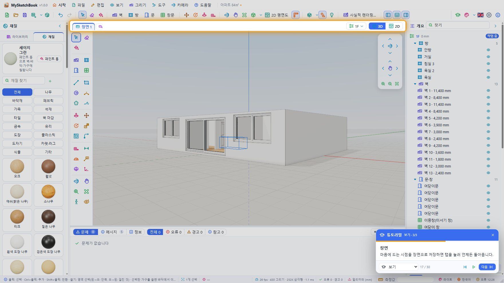
장면은 저장한 시점입니다. 카메라 위치, 면 스타일과 배경 등 스타일, 태그 보이기 상태, 2D/3D 여부가 함께 저장됩니다.
- 3D 화면 위 장면 탭 줄의 +(또는 카메라 › 장면 추가)로 지금 보기를 장면으로 추가합니다.
- 탭을 클릭하면 그 장면으로 부드럽게 이동합니다.
PageUp/PageDown은 이전·다음 장면. - 장면 탭: 이 장면 보기 · 이름 바꾸기 · 현재 보기로 갱신 · 장면 삭제.
10.2 층
- 층 추가(그리기 메뉴, 층 칩 메뉴, 층 탭의 +)는 맨 위층 위에 같은 높이의 층을 만들고("2F", "3F" …, 바닥판 25 cm를 띄움) 그 층을 작업 층으로 합니다.
- 3D 화면 오른쪽 위의 층 칩에서 작업 층을 고릅니다. 벽·방·가구·도형은 작업 층에만 그려지고 놓이며, 2D 평면도도 작업 층을 자릅니다.
- 층 탭: 이 층에서 작업 · 이름 · 바닥 높이 · 층 높이 · 보이기/숨기기 · 층 삭제(층이 둘 이상일 때, 그 층의 벽·방·가구·모델도 함께 삭제).
- 벽의 높이는 따로 정하지 않으면 층 높이를 따릅니다.
10.3 태그
태그는 SketchUp의 태그(예전 레이어)처럼 물체를 묶어 한꺼번에 보이거나 숨깁니다.
- 태그 탭의 +로 추가하고 이름을 바꿉니다. 눈 아이콘으로 보이기/숨기기, 오른쪽 숫자는 그 태그의 물체 수입니다.
- 벽·가구·모델의 속성 › 태그에서 태그를 정합니다.
- 태그를 지우면 그 물체들은 "태그 없음"으로 돌아갑니다.
11. 내 3D 모델 가져오기
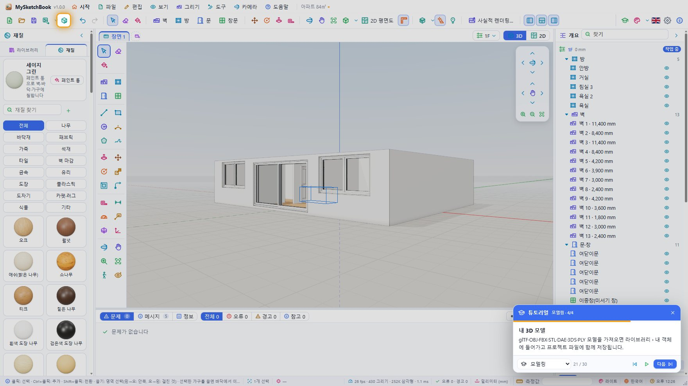
파일 › 3D 모델 가져오기…(Ctrl+I), 라이브러리의 가져오기 버튼, 또는 파일을 창에 끌어다 놓습니다.
| 형식 | 확장자 | 참고 |
|---|---|---|
| glTF / GLB | .glb .gltf | 가장 권장. .gltf는 .bin·텍스처를 함께 고릅니다 |
| Wavefront OBJ | .obj | .mtl과 텍스처 그림을 함께 고르면 재질이 들어옵니다 |
| Autodesk FBX | .fbx | |
| Collada | .dae | SketchUp 내보내기 형식 |
| STL | .stl | 3D 프린팅 |
| 3D Studio | .3ds | |
| PLY | .ply | 스캔 데이터 |
| 3MF | .3mf | 3D 프린팅 |
| USDZ | .usdz |
- 가져오기 창에서 파일 단위(자동 · mm · cm · m · in · ft)와 위쪽 축(자동 · Y가 위 · Z가 위)을 고릅니다. 자동 단위는 모델 크기를 보고 실내 물건으로 그럴듯한 단위를 고르며("단위를 … (으)로 추정했습니다"), 200 m보다 크면 단위를 확인하라고 알립니다.
- 작은 부품 합치기 (빠르게) — 부품이 아주 많은 모델을 재질별로 합쳐 빠르게 그립니다.
- 가져오는 동안 진행률 창이 나오며 취소할 수 있습니다. 끝나면 삼각형 수를 알리고, 라이브러리가 내 객체로 바뀌며 바로 놓을 수 있습니다.
- 가져온 모델은 GLB로 바뀌어 프로젝트 파일(.msk) 안에 저장됩니다. 다른 PC에서 열어도 그대로입니다. 놓은 뒤에는 다른 가구처럼 옮기고 돌리고 배율을 바꾸고 칠할 수 있습니다.
- SketchUp(.skp) 파일은 비공개 형식이라 직접 읽을 수 없습니다. SketchUp에서 파일 › 내보내기 › 3D 모델로 Collada(.dae) 또는 glTF(.glb)를 저장해 가져오세요.
12. 저장 · 열기 · 내보내기
12.1 프로젝트 파일 (.msk)
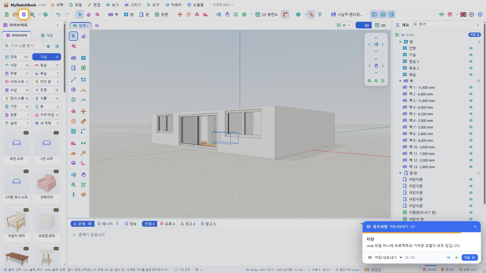
- 저장(
Ctrl+S), 다른 이름으로 저장…(Ctrl+Shift+S)..msk는 ZIP 파일 하나에 프로젝트 내용(project.json), 작은 미리보기 그림, 가져온 모델이 모두 들어 있습니다. - 열기…(
Ctrl+O)는.msk와 3D 모델 파일을 모두 받습니다(3D 모델은 가져오기가 됩니다)..msk파일을 창에 끌어다 놓아도 열립니다. - 최근 파일…(
Ctrl+R), 최근 폴더(그 폴더에서 열기 대화상자), 최근 파일·폴더 기록 모두 지우기. 없어진 파일을 고르면 목록에서 지울지 묻습니다. - 한 번에 프로젝트 하나를 엽니다. 저장하지 않은 변경이 있으면 새로 만들기·열기·닫기·끝내기 전에 저장 / 저장 안 함 / 취소를 묻습니다. 메뉴 막대의 프로젝트 이름 옆 ●가 저장하지 않은 변경 표시입니다.
- 프로젝트 닫기(
Ctrl+W)는 시작 화면으로 돌아갑니다. - 데스크톱에서 설정 › 일반 › 시작할 때 지난번에 연 파일 다시 열기를 켜면 다음 실행 때 마지막 파일을 엽니다.
- 웹 버전: 저장은 브라우저의 저장 대화상자(지원하지 않는 브라우저는 내려받기)로, 최근 파일은 브라우저가 기억한 파일 핸들로 다시 엽니다(권한을 다시 물을 수 있음).
12.2 그림으로 저장
파일 › 내보내기 › 그림으로 저장…(Ctrl+Shift+E, 툴바의 그림 버튼):
- 크기: HD · Full HD · QHD · 4K · 정사각 · A4 300dpi, 또는 가로 320~7680, 세로 240~4320 px.
- 형식: PNG · JPEG · WebP. PNG는 배경 투명을 고를 수 있습니다.
- 창 크기와 상관없이 지금 시점을 최고 품질(그림자·구석 음영)로 그립니다.
12.3 평면도 그림
파일 › 내보내기 › 평면도 그림 (.png) — 2D 평면도와 숨은선 제거 스타일로 바꾸고 전체가 보이게 맞춘 뒤 3000 × 2000 PNG로 저장하고, 원래 보기로 돌아갑니다.
12.4 3D 파일로 내보내기
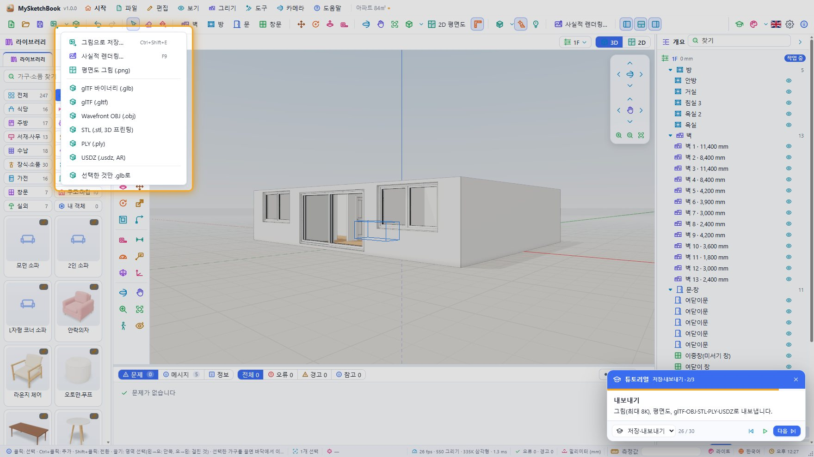
파일 › 내보내기에서 glTF 바이너리 (.glb) · glTF (.gltf) · Wavefront OBJ (.obj) · STL (.stl, 3D 프린팅) · PLY (.ply) · USDZ (.usdz, AR) 중 하나를 고르면 벽·바닥·문·창·가구·모델 전체를 미터 단위, Y가 위인 좌표로 저장합니다. 격자·축·안내선·모서리 선 같은 보조 표시는 빠집니다. 선택한 것만 .glb로는 선택한 물체만 내보냅니다.
- glTF/GLB는 재질과 텍스처까지 들어가 다른 3D 프로그램·게임 엔진·SketchUp(확장 기능)·Blender에서 가장 잘 열립니다.
- OBJ는 형상과 재질 이름만 쓰고
.mtl파일은 만들지 않습니다. - USDZ는 iPhone·iPad의 AR 빠른 보기로 열 수 있습니다.
13. 사실적 렌더링
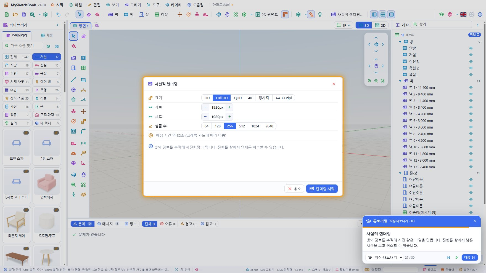
사실적 렌더링…(F9, 툴바)은 빛의 경로를 추적(path tracing)해 사진 같은 그림을 만듭니다.
- 렌더링 창에서 크기(그림으로 저장과 같은 프리셋, 가로·세로)와 샘플 수(64 · 128 · 256 · 512 · 1024 · 2048)를 고릅니다. 예상 시간이 나옵니다(그래픽 카드에 따라 다름).
- 렌더링 시작을 누르면 진행률 창에 "샘플 수 / 전체 · 약 몇 초 남음"이 나옵니다. 취소로 언제든 멈춥니다. 렌더링 중에도 프로그램은 응답합니다.
- 끝나면 결과 창에 그림이 나오고 PNG로 저장… 으로 저장합니다.
- 지금 카메라 시점과 노출을 씁니다. 조명은 스타일 탭에서 고른 환경 조명(HDRI)이고, 기본 실내 조명이면 지금 하늘색으로 만든 하늘빛을 씁니다. 배경도 HDRI면 그 사진이 보입니다.
- 샘플이 많을수록 잡티가 줄고 오래 걸립니다. 먼저 64~128로 구도를 확인한 뒤 512 이상으로 마무리하세요.
14. 튜토리얼과 도움말 창
- 튜토리얼(
F11, 툴바, 시작 화면): 8개 장, 30단계로 실제 프로그램을 움직이며 기능을 보여 줍니다. 오른쪽 아래 카드에서 이전·다음·자동 재생·장 고르기·끝내기(Esc). 튜토리얼은 자기 예제 프로젝트에서 작업하고, 끝나면 원래 프로젝트와 설정을 되돌려 놓습니다. 단계별 내용은 튜토리얼 문서에 있습니다. - 사용 설명서 · 튜토리얼 문서 — 별도의 창(웹은 새 탭)에서 열립니다. 위쪽 막대에서 장으로 이동, 한국어/English, 문서에서 찾기(
Ctrl+F,Enter다음 ·Shift+Enter이전), 인쇄, 브라우저로 열기. 문서는 프로그램의 테마 색을 따릅니다. - 튜토리얼 동영상 — 튜토리얼 자동 재생을 녹화한 동영상(
npm run tutorial:video로 만든 경우). 장 표시, 재생 속도, 전체 화면(F),Space재생/일시정지,←/→5초. - 단축키 목록… — 설정의 단축키 탭.
- 프로그램 정보…(
F1) — 버전, 빌드 날짜, 커밋, 실행 환경, 만든 사람.
15. 문제 검사
모델을 바꿀 때마다 잠시 뒤(0.4초) 자동으로 검사해 하단 패널의 문제 탭과 상태 표시줄에 개수를 보여 줍니다. 도구 › 지금 검사로 바로 검사합니다.
| 심각도 | 문제 | 뜻과 해결 |
|---|---|---|
| 오류 | 문·창(…)이 벽(…)보다 넓습니다 | 문·창의 폭이 벽 길이보다 깁니다. 폭을 줄이거나 벽을 늘리세요 |
| 오류 | 문·창이 벽 끝을 벗어났습니다 | 위치(벽 시작점에서)가 벽 밖으로 나갔습니다. 문·창을 벽 안쪽으로 옮기세요 |
| 오류 | 문·창이 벽보다 높습니다 | 바닥에서 높이 + 높이가 벽 높이를 넘습니다 |
| 오류 | 문·창이 '…'와 겹칩니다 | 같은 벽의 두 문·창이 겹칩니다. 하나를 옮기세요 |
| 오류 | 라이브러리에 없는 항목입니다 (…) | 파일이 가리키는 항목이 이 버전의 라이브러리에 없습니다(라이브러리를 받지 않았거나 다른 버전). npm run assets 또는 다른 항목으로 바꾸기 |
| 경고 | 벽이 너무 짧습니다 (10 cm 미만) | 실수로 찍힌 짧은 벽일 수 있습니다. 지우거나 늘리세요 |
| 경고 | 어느 방에도 들어 있지 않습니다 | 가구의 중심이 그 층의 어느 방 바닥에도 없습니다(방이 있는 층만 검사) |
| 경고 | '…'와 …% 겹칩니다 | 바닥에 놓인 두 가구가 35%보다 많이 겹칩니다. 러그·카펫·쿠션은 검사하지 않습니다 |
| 참고 | 바닥에서 … 떠 있습니다 | 바닥 가구가 3 cm ~ 60 cm 떠 있습니다. 바닥에 내려놓기로 고치세요 |
| 참고 | 벽은 있지만 방이 없습니다 | 벽만 있는 층입니다. 방 도구로 바닥을 만드세요 |
숨긴 가구는 검사하지 않습니다. 문제 행을 클릭하면 대상을 선택하고 보여 주며, 오른쪽 클릭 메뉴로 선택하고 보기 · 복사 · 대상 삭제를 합니다.
16. 설정
도구 › 설정… 또는 Ctrl+,. 바꾼 것은 바로 적용되고 저장됩니다. 아래의 기본값으로는 모든 설정을 처음대로 되돌립니다.
| 탭 | 항목 |
|---|---|
| 일반 | 언어(한국어/English) · 시작할 때 지난번에 연 파일 다시 열기(데스크톱) · 모델에서 요소를 삭제하기 전에 묻기 · 상태 표시줄에 시계 표시 · 상태 표시줄 · 마지막으로 쓴 폴더 · 튜토리얼 시작 |
| 시작 화면 | 시작할 때 시작 페이지 표시 · 시작할 때 안내 창 표시 · 최근 파일 표시 · 표시할 최근 파일 수(1~10) · 최근 폴더 표시 · 예제 프로젝트 표시 · 움직이는 배경 고르기 표시 · 튜토리얼 안내 띠 표시 · 시작 화면 지금 열기 |
| 테마 | 다크 20 · 라이트 20 · 사용자 정의, 시스템 설정(운영 체제의 밝기를 따름). 사용자 정의: 사용자 정의 테마 사용 · 어두운 테마 · 지금 테마의 색 가져오기 · 색 12가지(바탕 · 표면 · 패널 · 글자 · 흐린 글자 · 테두리 · 강조 · 강조 위 글자 · 줄무늬 행 · 차트 바탕 · 툴바 · 상태 표시줄), 글자가 잘 안 보이면 경고 |
| 글꼴 | 글꼴(시스템에 설치된 글꼴) · 글자 크기(9~28 px) · 굵기 · 스타일(보통/기울임) · 행 높이 · 확대/축소(50~200%) |
| 배경 | 배경 종류(움직이는 배경 · 이미지 · 없음) · 움직이는 배경 20가지 · 움직임 속도 · 시작할 때 배경 무작위 · 시작 페이지 배경 자동 변경(끄기 · 15초 · 30초 · 1분 · 2분 · 5분) · 움직이는 배경은 시작 페이지에서만 · 배경 이미지 고르기/지우기 · 배경 불투명도 · 맞춤(채우기 · 맞추기 · 바둑판 · 가운데 · 늘이기) |
| 3D 보기 | 아래 표 |
| 최근 기록 | 최근 파일과 최근 폴더 목록(없어진 것 표시), 하나씩 또는 모두 지우기 |
| 단축키 | 단축키 목록 (17장) |
3D 보기 탭:
| 묶음 | 항목 | 기본값 |
|---|---|---|
| 모델링 | 단위 (mm · cm · m · in · ft) — 새 프로젝트의 단위 | mm |
| 기본 벽 높이 (1.8 ~ 6 m) | 2.4 m | |
| 기본 벽 두께 (0.05 ~ 0.6 m) — 새 벽의 두께 | 0.15 m | |
| 추론(스냅) 사용 | 켬 | |
| 격자에 맞춤 · 격자 간격 (0.05 ~ 2 m) | 끔 · 0.5 m | |
| 화면 품질과 성능 | 표시 품질 (빠르게 · 균형 · 고품질) | 균형 |
| 계단 현상 제거 · 구석 음영 (AO) · 그림자 표시 | 켬 | |
| 그림자 해상도 (낮음 · 보통 · 고품질) | 보통 | |
| 최대 프레임 (30 · 60 · 120 · 제한 없음) | 60 | |
| 해상도 배율 (자동 · 75% · 100% · 150% · 200%) | 자동 | |
| 성능 표시 (FPS·삼각형) | 켬 | |
| 카메라 조작 | 왼쪽 버튼 끌기 — 회전 (빈 곳) · 선택 상자 (SketchUp). 선택 도구로 끌 때 화면을 돌릴지(Alt: 이동, 2D: 이동) 영역 선택을 할지 | 회전 (빈 곳) |
| 시야각 (20 ~ 100°) | 50° | |
| 궤도 속도 · 확대 속도 (20 ~ 300%) | 100% | |
| 휠 방향 반대로 · 격자 · 축 | 끔 · 켬 · 켬 |
지금 버전에서 기본 벽 높이와 추론(스냅) 사용, 일반 탭의 모델에서 요소를 삭제하기 전에 묻기, 배경 탭의 움직이는 배경은 시작 페이지에서만은 저장만 되고 동작에는 아직 반영되지 않습니다. 새 벽은 층 높이를 따르고, 추론은 늘 켜져 있으며, 삭제는 묻지 않고 실행 취소로 되돌립니다.
프로젝트마다의 단위는 아무것도 선택하지 않은 상태의 속성 탭에서 바꿉니다. 단위를 바꾸면 치수·속성·측정값 상자가 모두 그 단위로 바뀝니다.
테마는 툴바의 테마 버튼(무작위)과 ▾(어두운/밝은 테마 두 줄 목록, 사용자 정의 테마 편집…), 언어는 국기 버튼이나 Ctrl+Shift+L로도 바꿉니다.
17. 단축키
도움말 › 단축키 목록…(설정 › 단축키)과 같은 목록입니다. 한 글자 단축키는 SketchUp과 같습니다. 글을 입력하는 칸에 커서가 있을 때는 한 글자 단축키가 동작하지 않습니다.
도구
| 키 | 기능 |
|---|---|
Space | 선택 |
E | 지우개 |
B | 페인트 통 |
W | 벽 |
Shift+R | 방 |
L | 선 |
R | 사각형 |
C | 원 |
A | 호 |
Shift+P | 다각형 |
P | 밀기/당기기 |
M | 이동 |
Q | 회전 |
S | 크기 조절 |
F | 오프셋 |
T | 줄자 |
D | 치수 |
O | 궤도 |
H | 이동(화면) |
Z | 확대/축소 |
Shift+Z | 전체 보기 |
K | 면 스타일 바꾸기 |
G | 그룹 만들기 |
F4 | 2D 평면도 |
F9 | 사실적 렌더링 |
마우스와 입력
| 키 | 기능 |
|---|---|
가운데 버튼 끌기 | 궤도 (오른쪽 버튼 끌기도 같음) |
Shift + 가운데 버튼 끌기 | 이동(화면) |
마우스 휠 | 확대/축소 (커서 쪽으로) |
숫자 입력 | 측정값 상자에 길이·각도 입력 (Enter로 적용) |
화살표 키 | 축 방향 고정 (그리기 중) · 선택한 것 10 cm 이동 (선택 도구, Shift: 1 cm) |
Shift 누르기 | 추론 방향 고정 |
이동 중 Ctrl | 복사하며 이동 |
x5 / /5 | 배열 복사 (복사 직후) |
[ / ] | 배치 중 회전 (90°, Shift: 15°) |
Alt + 클릭 (페인트 통) | 재질 가져오기 |
W A S D (걷기 도구) | 걷기 (Shift 빠르게, Q/E 아래/위) |
Esc | 도구 끝내기 / 선택 해제 (그룹 편집 끝내기) |
파일과 편집
| 키 | 기능 |
|---|---|
Ctrl+N | 새 프로젝트 |
Ctrl+O | 열기 |
Ctrl+S | 저장 |
Ctrl+Shift+S | 다른 이름으로 저장 |
Ctrl+R | 최근 파일 |
Ctrl+W | 프로젝트 닫기 |
Ctrl+I | 3D 모델 가져오기 |
Ctrl+Shift+E | 그림으로 저장 |
Ctrl+Z | 실행 취소 |
Ctrl+Y | 다시 실행 (Ctrl+Shift+Z도 같음) |
Ctrl+X / C / V | 잘라내기 · 복사 · 붙여넣기 |
Ctrl+D | 복제 |
Delete | 삭제 (Backspace도 같음) |
Ctrl+A | 모두 선택 |
Ctrl+] / [ | 90° 회전 (시계 방향) / 반시계 방향 |
보기와 창
| 키 | 기능 |
|---|---|
PageUp / PageDown | 이전 장면 / 다음 장면 |
Ctrl+Shift+1 / 2 | 라이브러리 패널 / 개요·속성 패널 |
Ctrl+J | 하단 패널 |
Ctrl+Shift+R | 눈금자 |
Ctrl+Shift+L | 언어 전환 |
Ctrl+Shift+H | 시작 페이지 |
Ctrl+Shift+B | 움직이는 배경 바꾸기 |
Ctrl+, | 설정 |
F11 | 튜토리얼 |
F1 | 프로그램 정보 |
Alt+F4 (macOS Ctrl+Q) | 끝내기 |
18. 성능을 위한 팁
- 화면은 바뀔 때만 그리므로 가만히 두면 그래픽 카드를 쓰지 않습니다. 상태 표시줄의 성능 표시(FPS · 그리기 호출 · 삼각형 · 프레임 시간)로 무엇이 느린지 봅니다.
- 느리면 표시 품질 › 빠르게, 구석 음영 끄기, 그림자 해상도 낮추기, 해상도 배율 75%, 최대 프레임 30 순서로 줄여 보세요.
- 같은 가구를 여러 개 놓아도 형상과 재질은 한 벌만 그래픽 카드에 올라가므로 부담이 적습니다. 반대로 수백만 삼각형짜리 모델을 가져오면 느려집니다. 가져올 때 작은 부품 합치기를 켜고, 필요하면 다른 프로그램에서 면 수를 줄이세요.
- 큰 집은 층이나 태그로 지금 필요 없는 부분을 숨기면 빨라집니다.
- 그림자는 장면이나 해가 바뀔 때만 다시 계산합니다. 시각 막대를 끄는 동안에는 그림자가 계속 다시 계산됩니다.
- 사실적 렌더링은 그래픽 카드를 오래 씁니다. 노트북은 전원을 연결하고, 낮은 샘플로 구도를 먼저 확인하세요.
- 웹 버전보다 데스크톱 앱이 파일 입출력이 빠르고 큰 파일을 다루기 좋습니다.
19. 자주 묻는 질문과 문제 해결
라이브러리에 HQ 모델이 없고 재질이 단색으로만 보입니다.
내려받은 라이브러리(library/)가 없을 때입니다. 소스에서 실행한다면 npm run assets로 받으세요. 설치판에는 들어 있습니다. 매개변수 가구와 단색 재질은 라이브러리 없이도 씁니다.
SketchUp 파일(.skp)을 열 수 없습니다. .skp는 비공개 형식입니다. SketchUp에서 파일 › 내보내기 › 3D 모델로 .dae나 .glb를 저장해 가져오세요(11장).
가져온 모델이 너무 크거나 작고, 누워 있습니다. 가져오기 창에서 파일 단위와 위쪽 축을 직접 고르세요. 놓은 뒤에는 속성의 배율이나 크기 조절 도구로도 맞춥니다.
OBJ를 가져왔더니 색이 없습니다.
.obj와 함께 .mtl 파일과 텍스처 그림을 같이 골라(또는 같이 끌어다 놓아) 가져오세요.
문·창이 벽에 들어가지 않습니다. 벽 위를 클릭해야 하며, 문·창의 폭이 벽 길이보다 짧아야 합니다. 2D 평면도에서 하면 쉽습니다.
방을 클릭해도 바닥이 생기지 않습니다. 벽이 완전히 닫혀 있어야 합니다. 끝점에 맞춰(“끝점” 표시) 벽을 이으세요. 닫히지 않은 곳은 방 도구로 꼭짓점을 직접 찍어도 됩니다.
밀기/당기기를 할 면이 없습니다. 밀기/당기기는 그리기 도구로 만든 면(모델)에만 씁니다. 벽은 속성의 높이·두께로 바꾸세요. 선이 닫혀 면이 생겼는지(면이 칠해지는지) 확인하세요.
솔리드 도구가 "닫힌 솔리드가 아닙니다"라고 합니다. 구멍이나 남는 선이 없는 닫힌 입체만 됩니다. 모델 속성의 형상에 "solid … m³"가 나오는지 확인하세요.
2D 평면도에서 돌아왔더니 화면이 기울어져 보입니다. 표준 보기 › 등각 보기(툴바의 등각 보기 버튼)를 누르면 바로잡힙니다.
사실적 렌더링이 너무 오래 걸립니다. 샘플 수와 크기를 줄이세요. 진행률 창의 취소로 언제든 멈출 수 있습니다. 그래픽 카드가 작은 노트북에서는 Full HD·256 샘플도 몇 분 걸릴 수 있습니다.
화면이 검게 나오거나 3D 화면이 보이지 않습니다. 그래픽 드라이버를 업데이트하세요. 브라우저라면 하드웨어 가속이 켜져 있는지 확인하세요. 설정 › 3D 보기 › 해상도 배율을 낮추면 메모리가 적은 그래픽 카드에서 도움이 됩니다.
저장하지 않고 닫았습니다.
저장하지 않은 프로젝트는 되돌릴 수 없습니다. 자주 Ctrl+S로 저장하세요. 실행 취소 기록(100단계)은 프로젝트를 닫으면 사라집니다.
설정을 처음대로 되돌리고 싶습니다. 설정 › 기본값으로. Windows에서는 설치 프로그램을 다시 실행할 때 사용자 데이터를 지울지 물어봅니다.
오류 창이 떴습니다. 오류 창의 내용(메시지·세부 정보·버전)은 복사할 수 있고, 하단 패널의 메시지 탭에도 남습니다. 문의할 때 함께 보내 주세요(SHKWON, knix008@naver.com).